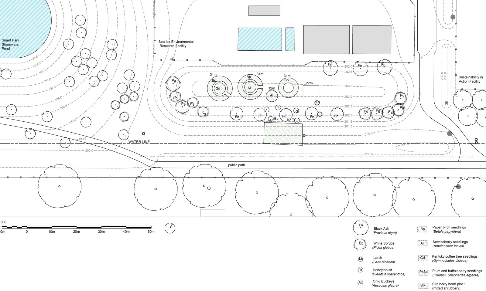
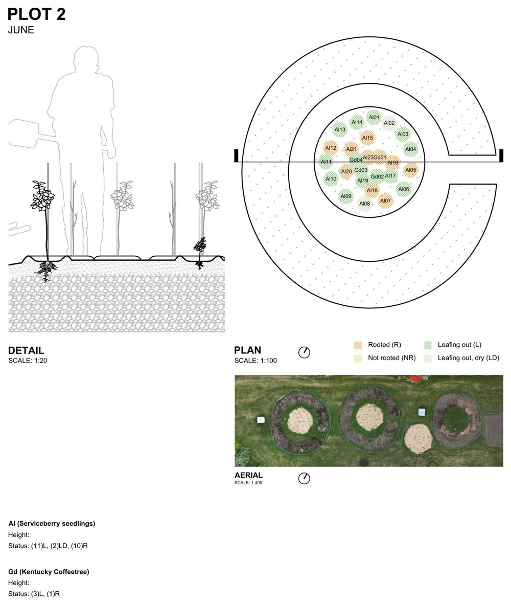
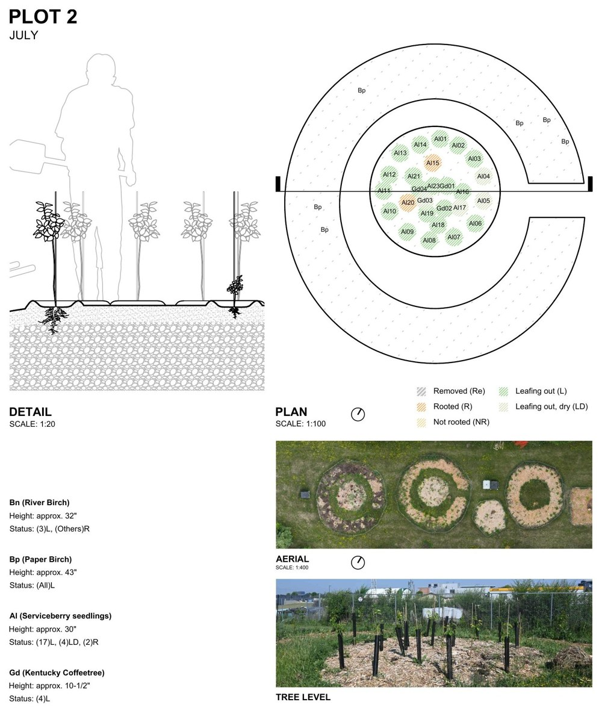
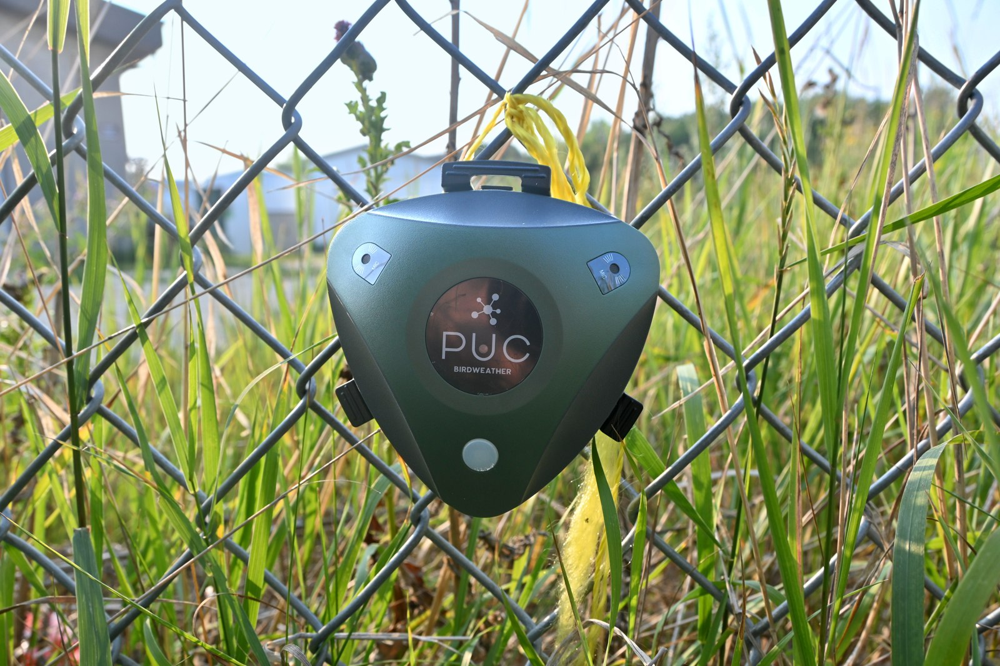
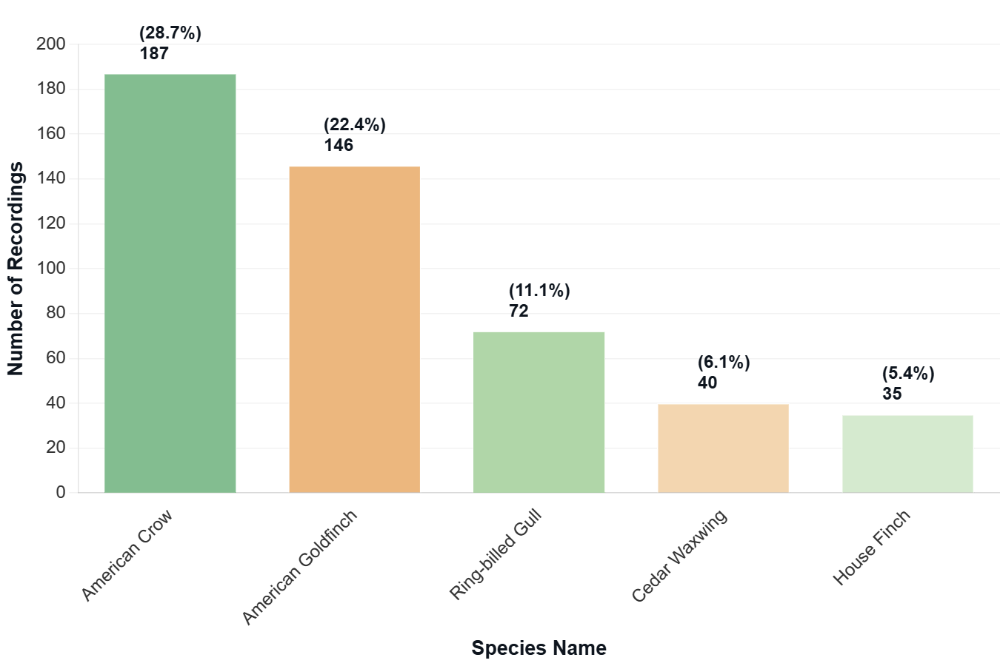
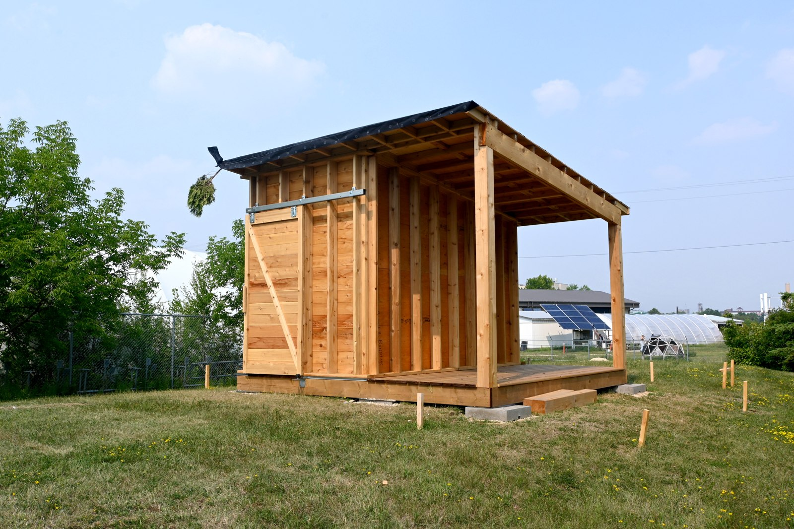
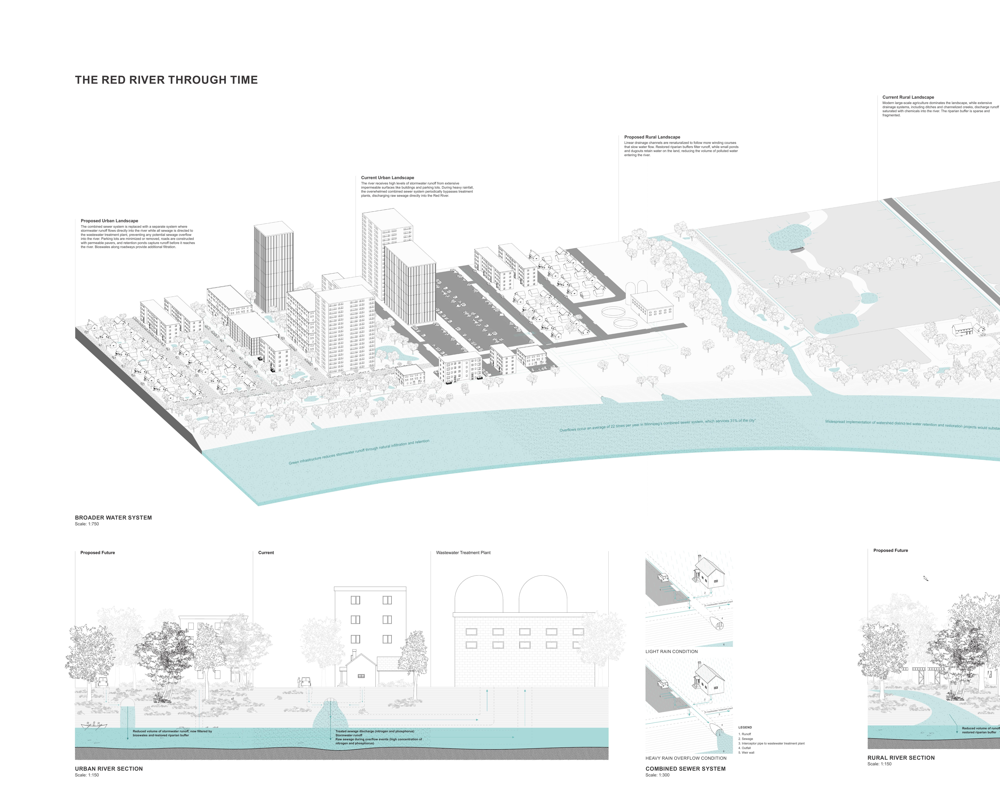

This summer-long research project involved contributing to and documenting the Sylvan Studio research planting site on campus, an outdoor learning lab focused on experimental design with woody species and sustainable approaches to irrigation. Data collection efforts included developing survey sheets to assess plant health. These sheets include sectional drawings illustrating one of the modest water-capture methods used on site: mulch saucers designed to collect and hold water at the base of plants.




The site's monthly evolution was documented using point clouds and orthomosaics to capture comprehensive spatial data.
Documentation extended beyond the plantings themselves to track bird biodiversity and animal movement across the site.



Assistance was provided in constructing a tool shed designed as part of the Home for a Wheelbarrow competition.
Another component of the research focused on broader water systems in Manitoba. A TU Delft WaterWorks course provided a starting point for studying dugouts—constructed reservoirs that capture surface water for agricultural use. This inquiry expanded to farmstead-scale water management and ultimately into a drawing tracing the Red River through time and space.
The urban portion explores blue-green infrastructure scenarios for city-wide stormwater retention and filtration, including separate sewer systems to replace the antiquated combined system that allows raw sewage into the river.
The rural portion spans four periods: pre-settlement, Métis river lot settlement, current conditions, and a proposed future. The proposed future draws on pre-settlement land and water management practices, calling for renaturalized creeks, restored riparian buffers, and increased water retention.
